Plotting
TSAnalytics defines RecipesBase.jl recipes for its result types, so plot(result) works with any Plots.jl-compatible backend — without TSAnalytics itself taking on a Plots.jl/Makie.jl dependency (see ACFResult and the recipe list in the API reference).
The @example blocks below are real, executable code — Documenter runs them at build time and embeds the actual generated images, the same as any other Julia package's plotting examples. The session that first wrote them hit a local environment problem unrelated to TSAnalytics (a broken Qt6/GR dependency on that machine) that made it impossible to render and eyeball them there first. They render for real on CI (Ubuntu) — if that build ever fails on one of these blocks, fix the code here, don't just delete the warning.
Autocorrelation
using TSAnalytics, Plots, Random
Random.seed!(1)
y = 100 .+ 10 .* sin.(2π .* (1:96) ./ 12) .+ randn(96)
plot(acf(y, collect(1:24)); title="ACF")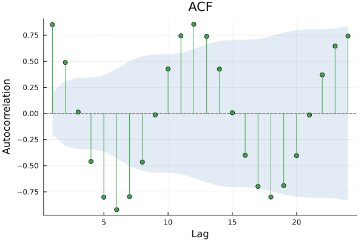
pacf(...) results plot identically – both return an ACFResult, tagged by kind (:acf or :pacf), which the recipe uses for the axis label.
Decomposition
plot works the same way on any of ClassicalDecomposition, STLDecomposition, and MSTLDecomposition — a stacked observed/trend/seasonal/remainder display.
plot(stl_decompose(y, 12))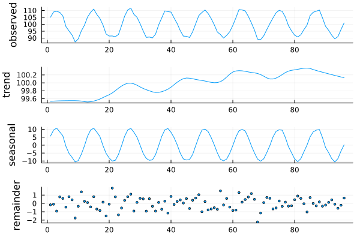
Spectral density
periodogram/spectral_density return a PeriodogramResult, with its own recipe (log-scale y-axis, the conventional display given a spectrum's large dynamic range). Series with more than 10,000 plotted points are decimated for display via local-maximum retention, which always preserves the true spectral peak exactly.
plot(periodogram(y))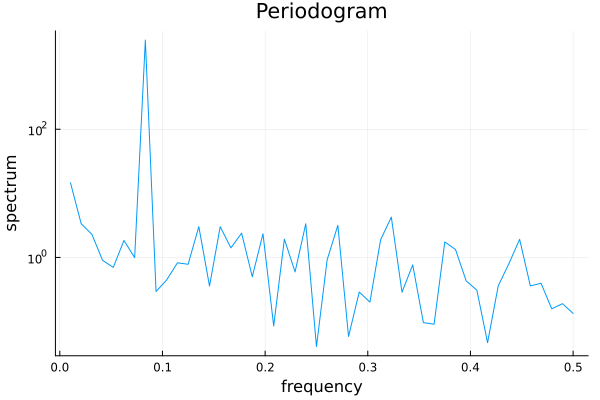
Residual diagnostics
diagnostic_plot produces the standard 4-panel residual display (standardized residuals, ACF, Q-Q plot, Ljung-Box p-values across lags) — see Was It Any Good? for the underlying data this renders.
resid = randn(MersenneTwister(2), 200)
plot(diagnostic_plot(resid))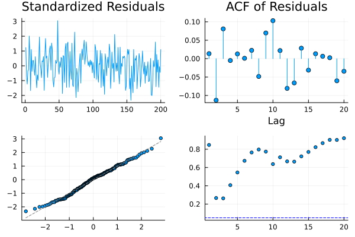
Variance models
Handed a fitted GarchModel rather than a residual vector, diagnostic_plot returns a six-panel variance-model display instead: fitted conditional volatility over the series, absolute residuals, standardised residuals, the ACF of those and of their squares, a Q-Q plot, and the news impact curve — variance response plotted against shock size, which is where an asymmetric model's leverage effect becomes visible as a kink rather than a number.
e = randn(MersenneTwister(4), 800)
plot(diagnostic_plot(fit_garch(e, 1, 1)))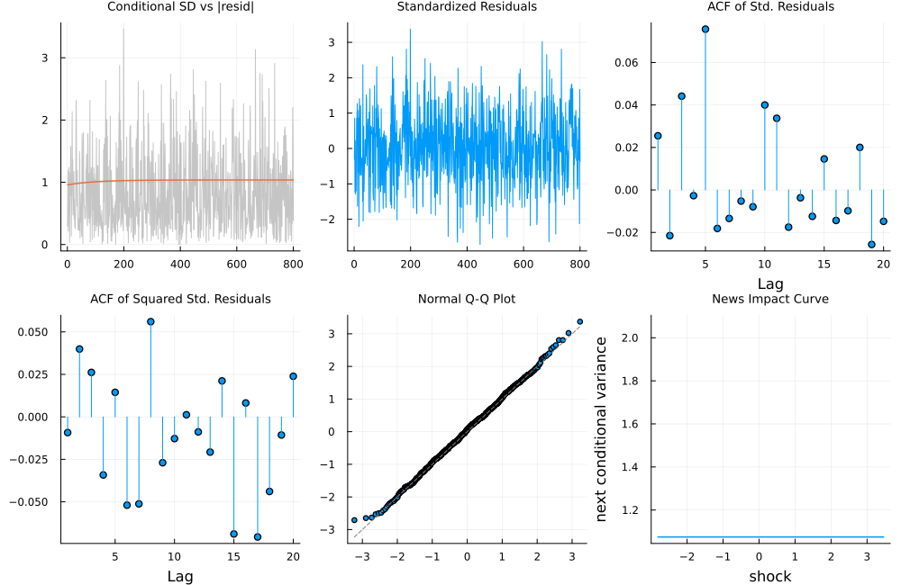
The news impact panel is omitted for model=:egarch, whose log-variance recursion has no directly comparable curve on the variance scale — GarchDiagnosticPlotResult's news_impact_e field is nothing there. See GARCH and Volatility for what the panels are telling you.
Box-Cox profile likelihood
The classic by-eye Box-Cox lambda selection view — boxcox_profile_plot returns a plain (lambdas, loglik) pair, plotted directly:
x = abs.(randn(MersenneTwister(3), 200)) .+ 5.0
profile = boxcox_profile_plot(x)
plot(profile.lambdas, profile.loglik; xlabel="lambda", ylabel="log-likelihood", legend=false, title="Box-Cox profile")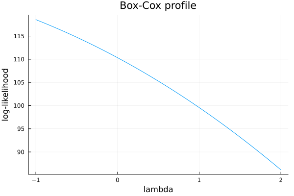
Forecasts
Any Forecast — from ARIMA, ETS, Theta, TBATS or a benchmark — plots as a fan chart: one shaded band per interval level, widest outermost. A forecast does not carry the series it came from, so pass it as history to draw it before the forecast origin. A VARForecast gives one panel per variable, and a VolatilityForecast plots the forecast σ, with a band only when it was simulated.
m = fit_ets(y, 12; trend = :add, seasonal = :add)
plot(forecast(m, 24); history = y)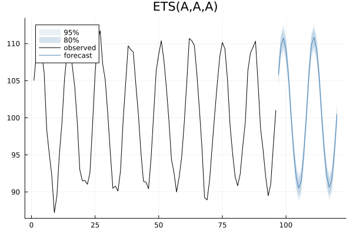
State decomposition
state_decomposition gives the panels of R's plot.ets and plot.tbats: observed, level, slope if there is one, and one seasonal panel per period.
plot(state_decomposition(m); size = (700, 600))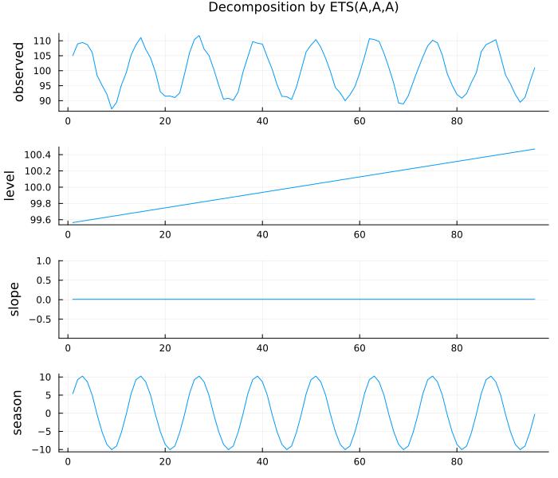
First look and ARIMA roots
ts_display is the series with its ACF and PACF beneath — R's ggtsdisplay. arma_roots puts a fitted ARIMA's inverse AR and MA roots against the unit circle: inside means stationary and invertible.
plot(ts_display(y); size = (700, 500))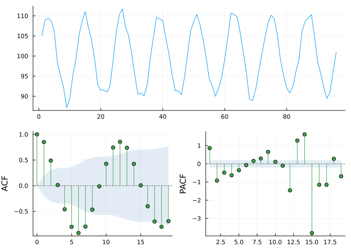
plot(arma_roots(fit_arima(y, (2, 0, 1))); size = (420, 420))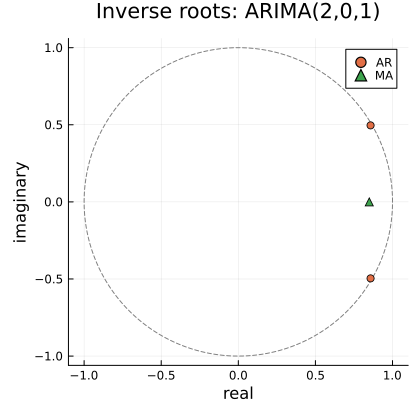
Seasonal and lag plots: data only
seasonal_plot and lag_plot return the data and stop there, like seasonal_subseries_plot: each has several equally standard renderings (lines or a polar plot; a scatter grid or convex hulls), so the package does not pick one for you.
c = seasonal_plot(y, 12)
plot([pos for pos in c.positions], c.cycles; legend = false, xlabel = "month")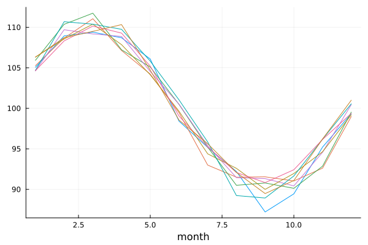
VAR stability, residuals and cointegration
roots_plot puts a VAR's companion eigenvalues against the unit circle; diagnostic_plot(m::VARModel) gives each equation's residuals and their ACF; cointegration_plot draws the estimated equilibrium relations of a fit_vecm model or a johansen_test. Impulse responses and variance decompositions plot directly: plot(irf(m, h)), plot(fevd(m, h)). See Vector Autoregression, Causality and Impulse Responses, Cointegration and VECM and Structural VAR for each in context.
Unobserved components
state_decomposition takes an unobserved-components model too (fit_uc), and then each component carries its smoothed standard error: the ribbon is a 95% interval for the smoothed component, not a forecast interval. The irregular is a residual and gets none; the one-step fitted values are overlaid on the observed series.
using DelimitedFiles
nile = readdlm(TSAnalytics.NILE, ',', skipstart = 1)[:, 2]
plot(state_decomposition(uc_local_level(nile)); size = (700, 550))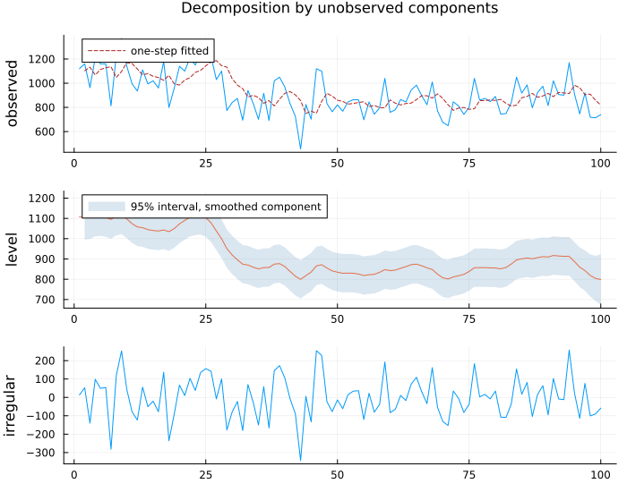
Dynamic factor models
factor_paths draws the smoothed factors with their bands, or with overlay_series = true the factors over the data; loadings_plot shows which series load on which factor; factor_r2_plot gives both variance decompositions; factor_selection_plot the scree plot and Bai–Ng criteria; and factor_residual_plot a box per series.
Yus = standardize(readdlm(TSAnalytics.US_CHANGE, ',', skipstart = 1))
dfm = fit_dfm(Yus, 2)
plot(factor_paths(dfm); size = (700, 450))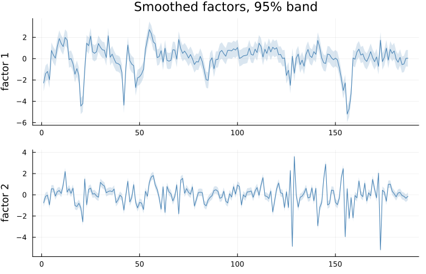
plot(plot(loadings_plot(dfm)), plot(factor_r2_plot(dfm)); size = (900, 350))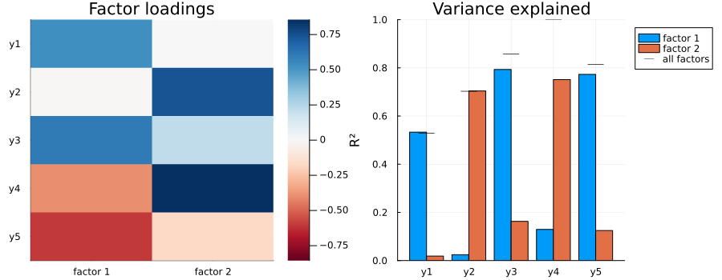
plot(factor_selection_plot(Yus, 3); size = (850, 330))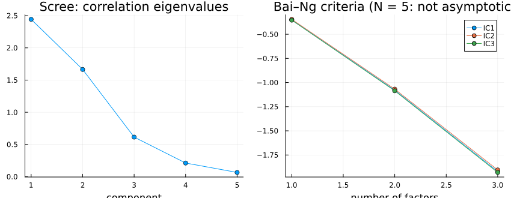
With five series the criteria are far from their asymptotics and simply keep falling: the plot says so, and the minimum is not an answer.
Regime switching
regime_plot carries the filtered and smoothed regime probabilities. By default one panel per regime overlays the two; with mode = :shaded the series is drawn with the periods in a regime shaded.
gnp = readdlm(joinpath(pkgdir(TSAnalytics), "handoff", "stage 11", "fixtures",
"hamilton_rgnp.csv"), ',', skipstart = 1)[:, 2]
ms = canonicalise(fit_ms_autoregression(Float64.(gnp), 4))
plot(regime_plot(ms); size = (700, 450))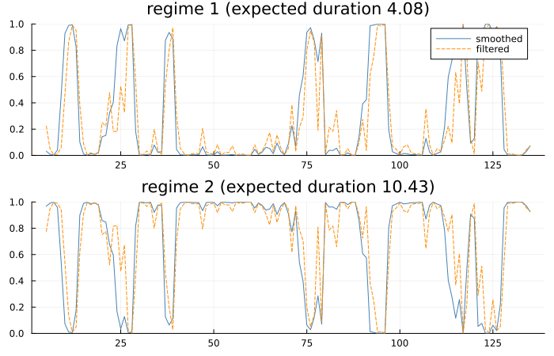
plot(regime_plot(ms); mode = :shaded, regime = 1)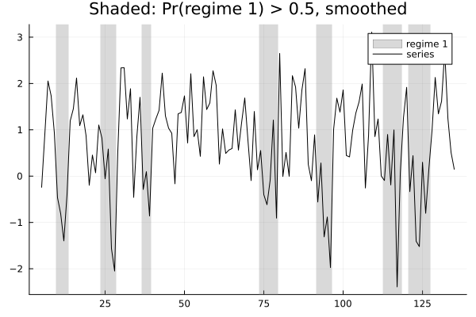
Threshold models
threshold_regime_plot colours the series by regime, with the threshold drawn; threshold_phase_plot plots y_t against a lag, for any number of regimes; threshold_profile shows the criterion the search minimised; transition_plot the fitted LSTAR transition; and a setar_test result plots its bootstrap distributions directly.
lynx = log10.(readdlm(TSAnalytics.LYNX, ',', skipstart = 1)[:, 2])
st = fit_setar(lynx, 2; thDelay = 1, warn = false)
plot(plot(threshold_regime_plot(st)), plot(threshold_phase_plot(st)); size = (900, 350))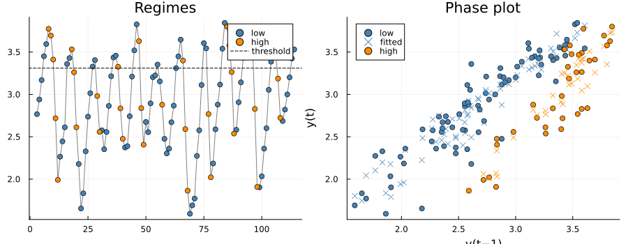
plot(threshold_profile(st))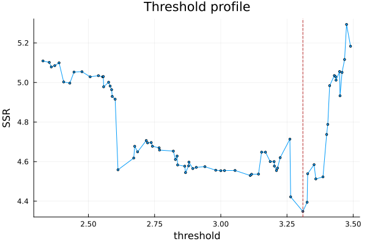
plot(transition_plot(fit_lstar(lynx, 2; thDelay = 1)); size = (850, 330))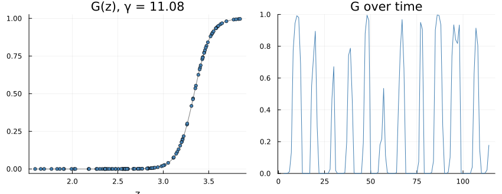
plot(setar_test(lynx, 2; thDelay = 0:1, nboot = 200); size = (950, 320))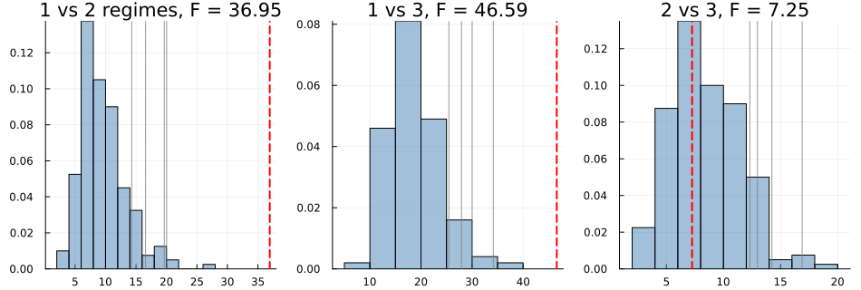
Seasonal subseries plot
fpp3's own signature "subseries plot" — seasonal_subseries_plot returns values/position/cycle/means; group values by position into one panel or line per position, each with a horizontal reference line at its own means[p].